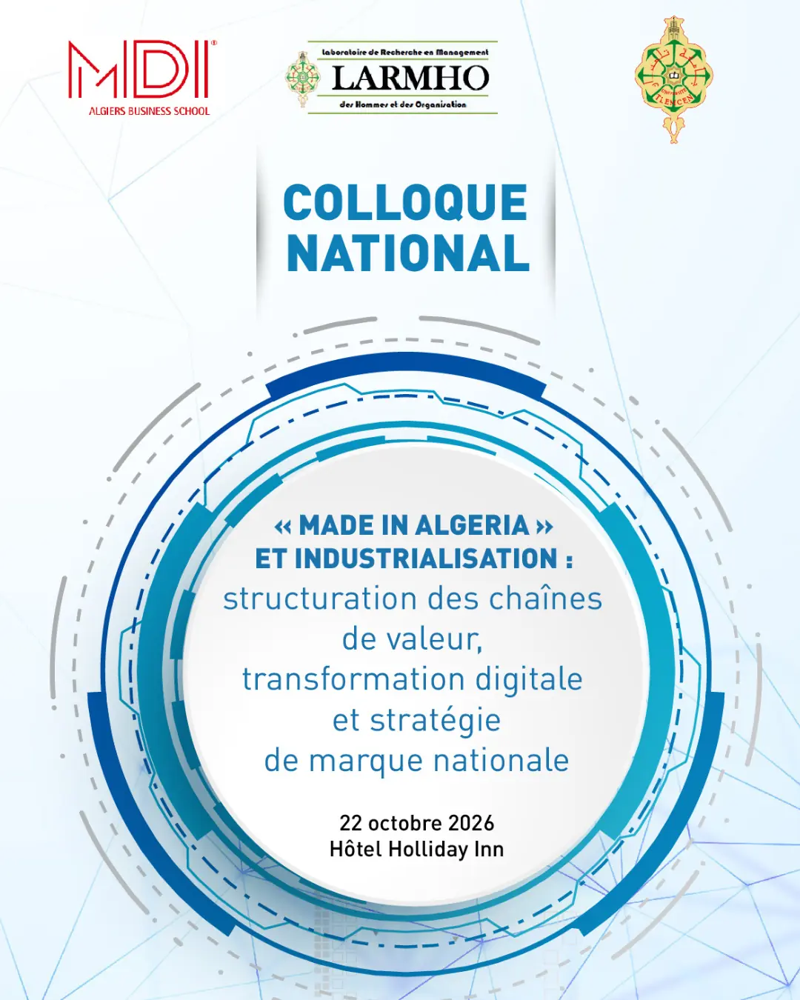
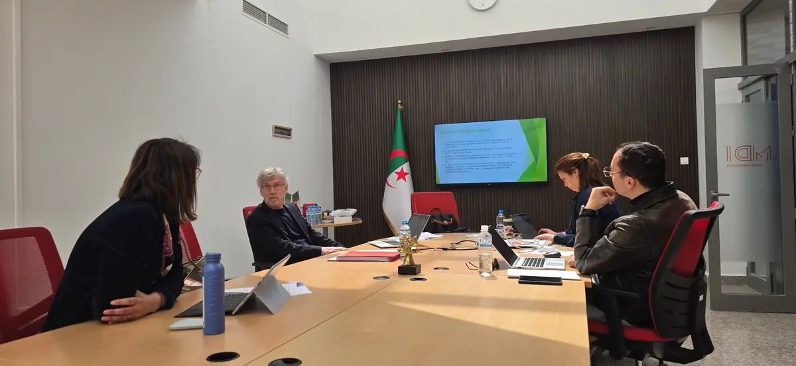

Une recherche appliquée.
Une revue scientifique à comité de lecture, ManagementS ; un colloque international (16e édition le 21 avril 2024) ouvert aux enseignants-chercheurs et aux doctorants ; des ateliers doctoraux ; l’adhésion à l’initiative PRME des Nations unies. La recherche de MDI éclaire les défis du management et nourrit les enseignements.

Colloque scientifique national
2026 · Holiday Inn Algiers – Cheraga Tower
12 jours avant le colloque
« Made in Algeria » et industrialisation.
Made in Algeria et industrialisation : chaînes de valeur, transformation digitale et stratégie de marque nationale.
Dans un contexte marqué par la transformation économique de l’Algérie et la valorisation du Made in Algeria, MDI Algiers Business School, en collaboration avec le Laboratoire de Recherche en Management des Hommes et des Organisations (LARMHO) de l’Université Abou Bekr Belkaïd de Tlemcen, lance un appel à communication pour son colloque scientifique annuel.
- Date — 22 octobre 2026
- Lieu — Holiday Inn Algiers – Cheraga Tower, Chéraga, Alger
- Co-organisation — LARMHO, Université Abou Bekr Belkaïd de Tlemcen
- Public — enseignants-chercheurs et doctorants
- Appel à communication — disponible en français et en anglais dans l’annonce publiée par l’école


Participer
De la proposition à la journée du 22 octobre.
- Soumettre une proposition
Enseignants-chercheurs et doctorants proposent une communication en lien avec les thématiques du colloque, en français ou en anglais, selon l’appel publié par l’école.
- Évaluation
Les propositions sont examinées par le comité scientifique du colloque, organisé par MDI et le LARMHO.
- Programme
Les communications retenues sont réunies dans le programme de la journée, communiqué aux auteurs et aux participants.
- Journée du 22 octobre
Présentations et échanges au Holiday Inn Algiers – Cheraga Tower, autour des chaînes de valeur, de la transformation digitale et de la marque nationale.
Revue ManagementS
ManagementS, la revue de l’école.
MDI édite ManagementS, une revue scientifique à comité de lecture consacrée au management. Elle publie des travaux qui éclairent les défis du management contemporain et alimentent une réflexion stratégique utile aux décideurs économiques.
La revue dispose de son propre site : les numéros, les consignes aux auteurs et les appels à contributions y sont publiés.

Notre recherche appliquée, portée notamment par la revue scientifique ManagementS, éclaire les grands défis du management contemporain.
Dr Amine Oussedik, Directeur Général
La recherche nourrit la pédagogie
- Les enseignements intègrent l’intelligence artificielle, la transformation digitale et le développement durable, enjeux que l’école inscrit dans ses programmes.
- Le conseil scientifique, installé en mars 2021, valide les programmes, les règlements des études et les orientations de la recherche.
- Les enseignants-chercheurs recrutés par l’école sont titulaires d’un doctorat, avec au moins trois ans d’expérience en enseignement et en recherche.
Colloques précédents
Trois éditions du colloque international.
Le colloque international de MDI, rendez-vous de la recherche en management de l’école : ses 14e, 15e et 16e éditions, telles que l’école les a annoncées.
14e colloque · février 2018
Le potentiel humain en Afrique
En février 2018, la 14e édition du colloque international de MDI pose la question « Développer le potentiel humain en Afrique : quelles compétences pour l’émergence africaine ? ».
Les dates de l’école15e colloque · juin 2021
L’entreprise algérienne face au digital
En juin 2021, la 15e édition du colloque international de MDI porte sur « L’entreprise algérienne à l’épreuve de la transformation digitale ».
La revue ManagementS16e colloque · 21 avril 2024
Former au management dans les économies en transition
Deux axes : former au management dans les économies en transition et intégrer l’intelligence artificielle dans les pratiques pédagogiques.
L’agendaConférences et ateliers
Des rencontres ouvertes au débat.
Rencontres-débats, journées d’études, ateliers doctoraux et workshops pour les professionnels : les rendez-vous de la recherche sur le campus de Chéraga.
- ColloqueColloque scientifique national « Made in Algeria et industrialisation »
- ConférenceRencontre-débat avec le Pr Taïeb Hafsi (HEC Montréal)
- ColloqueJournée d’études « Santé mentale et bien-être au travail »
- ConférenceConférence « Hygiène numérique et économie de l’attention »
- AtelierAtelier de recherche du DBA avec le Pr Pierre Louart
- AtelierWorkshop « Impact de l’IA générative sur la gestion des ressources humaines »
- Colloque16e colloque international de MDI

Professeurs invités
Des professeurs invités interviennent régulièrement à MDI : le Pr Taïeb Hafsi (professeur émérite, HEC Montréal) pour une rencontre-débat sur la pensée autonome en décembre 2025 ; le Pr Pierre Louart pour les ateliers de recherche du DBA et le workshop sur l’impact de l’IA générative sur la gestion des ressources humaines ; le Dr Samir B. Maliki pour des conférences en 2024.
L’atelier de recherche du DBA, 19 avril 2025Engagements
Responsable, collégiale, ouverte.
Ce qui encadre la recherche à MDI : un engagement international, un conseil scientifique et des partenariats avec des laboratoires et des écoles.
PRME
Un management responsable
L’école a adhéré à l’initiative PRME (Principles for Responsible Management Education) des Nations unies. Cet engagement sociétal concrétise la valeur « Responsabilité » de MDI et oriente ses enseignements et sa recherche.
Le site de PRME (nouvel onglet)Conseil scientifique
Dix membres, depuis mars 2021
Présidé par le Dr Brahim Benabdeslem, le conseil scientifique réunit dix docteurs et professeurs. Il valide les programmes, les règlements des études et les orientations de la recherche.
La gouvernancePartenariats
Laboratoires et écoles
Le colloque 2026 est co-organisé avec le LARMHO de l’Université de Tlemcen ; des accords de pédagogie et de recherche lient MDI à HEC Montréal, Paris 1 Panthéon-Sorbonne, Dauphine-PSL et d’autres établissements.
Les partenaires académiquesProposer
Proposer une communication ou un partenariat de recherche.
Enseignant-chercheur, doctorant, laboratoire ou entreprise : écrivez à l’école pour soumettre une proposition de communication, un projet de recherche appliquée ou un partenariat scientifique.